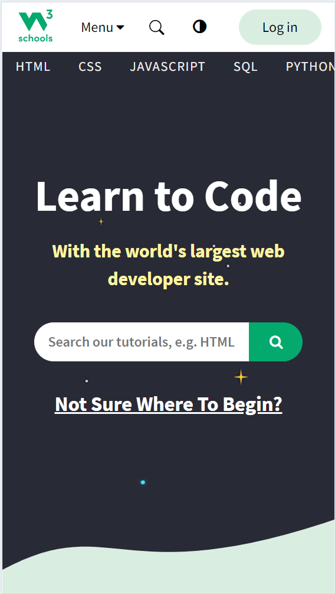
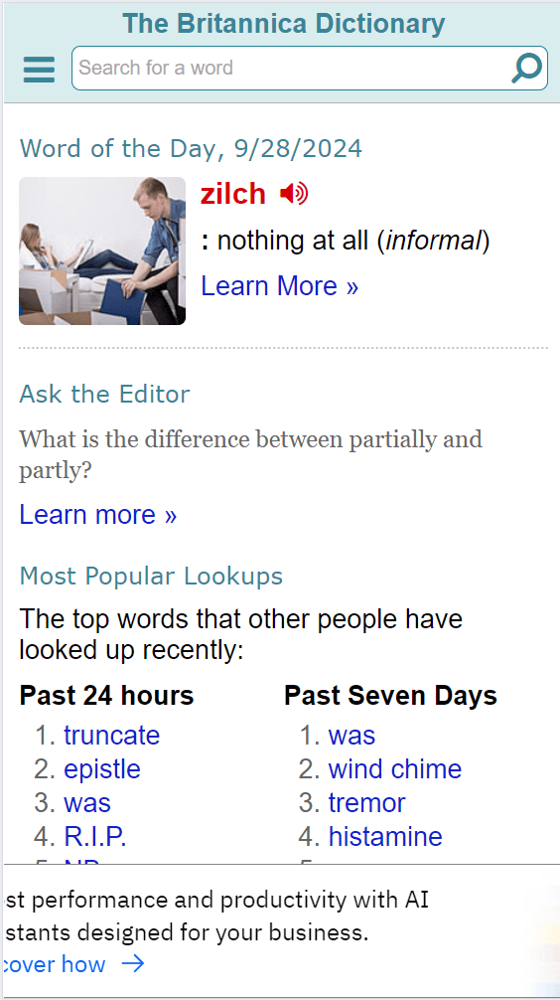
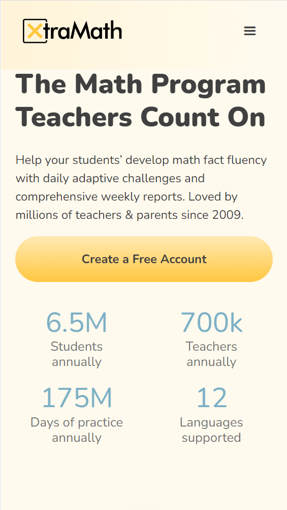

White Space and Clean Design
1 W3Schools
White Space and Clean Design The w3schools website uses a sparse background with bold lettering. There is no clutter. It is a simple and clean look. Becuse there are so few items on the page the eye is atomatically attracted to main points. It is easy to find the search bar and the purpose of the page.
PARC: Proximity
2 Britannica
PARC: Proximity Related items are grouped together such as "Past 24 housr" and " Past Seven Days". Theses are all links to previous words. Having these near each other allows the user to look in one place for links.
PARC: Alignment
3 XtraMath
PARC: Alignment The ExtraMath site is easy to read because the items are aligned. The use of grid below the button creates a flow that allows the reader to see what is important and to move on without searching for the information.